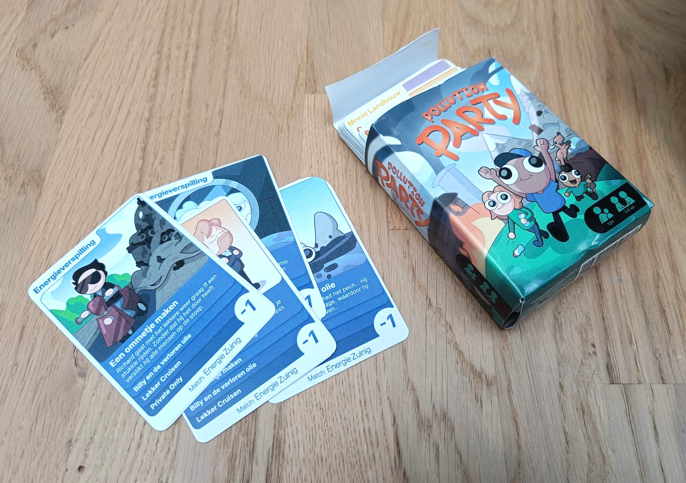
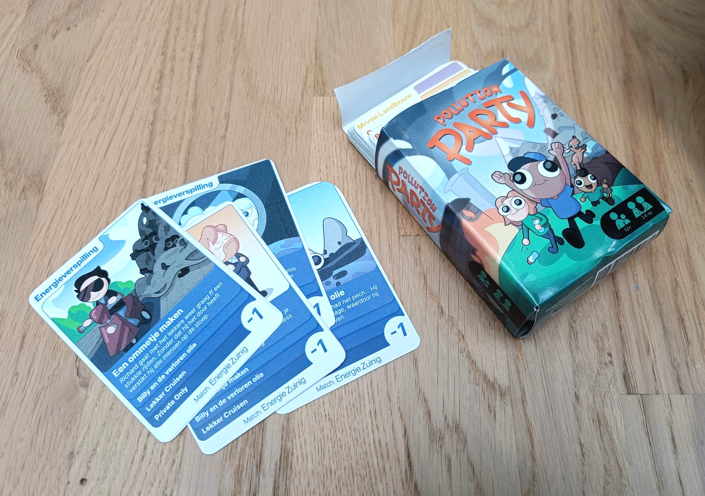
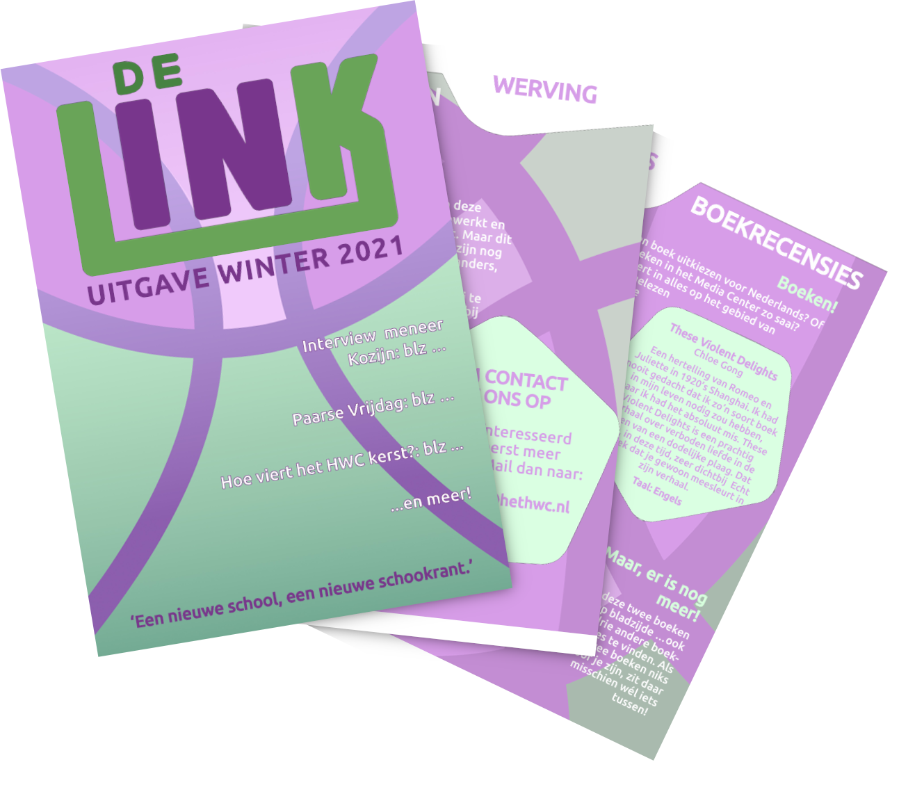
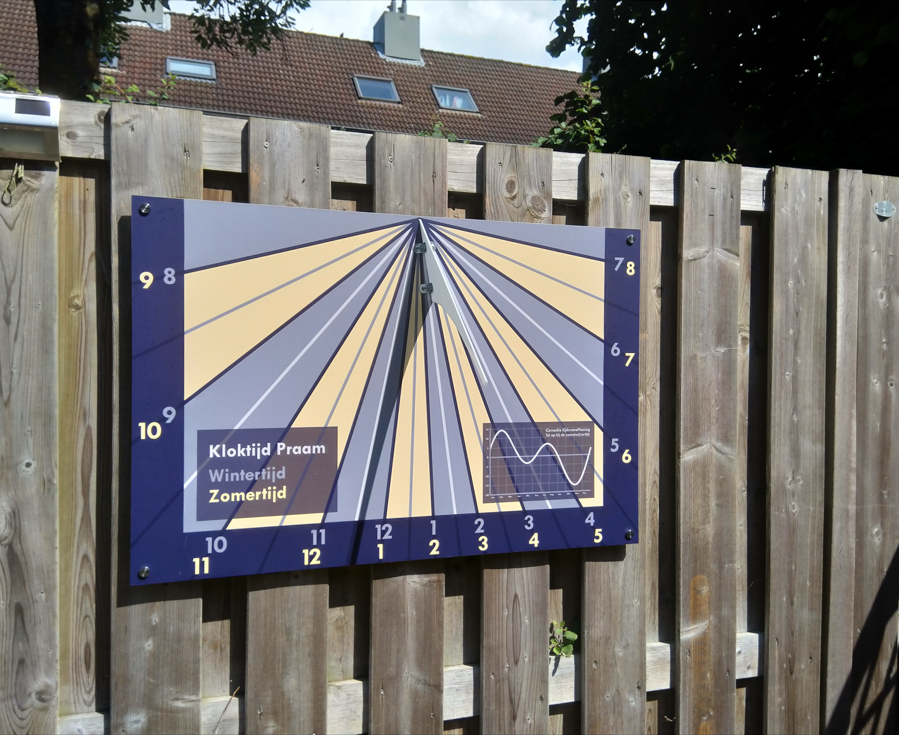

Pollution Party
Rol: Illustratie, spelregels en verslaggeving - April 2024
Een volledig kaartspel, gemaakt met een groepje van vier mensen. Ik heb een derde van de kaarten geïllustreerd, en de doos ontworpen.
Ik vind het leuk om naast digitale projecten, ook met de handen bezig te zijn - of deze twee te combineren! Om niet alleen op een beeldscherm iets moois neer te zetten, maar om het vervolgens ook daadwerkelijk vast te kunnen houden.
Rol: Illustratie, spelregels en verslaggeving - April 2024
Een volledig kaartspel, gemaakt met een groepje van vier mensen. Ik heb een derde van de kaarten geïllustreerd, en de doos ontworpen.
Rol: Redacteur, vormgever, december 2021
De schoolkrant van mijn middelbare school, waarvoor ik de volledige layout zelf heb ontworpen aan de hand van de huisstijl van de school.
Rol: Vormgever, juli 2021
Een werkende zonnewijzer, die precies is afgestemd op de locatie van mijn huis, en de kant die mijn schutting op is gericht. De hoeken zijn berekend door mijn vader, en de vormgeving + oplossingen winter/zomertijd zijn gedaan door mij.